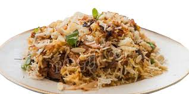

My hobbies are Reading books,watching series,Talking with people,hangout with friends,giving time to my mother,eating foods, etc of them.but i think from all of them reading book is beneficial for me and very much effective.
My favorite food is Kacchi
My favorite male singer is Ed Sheeran,And female is Taylor swift.I love mashmallow also.My favourite tv serious till now is friends but i know it will change very soon as i'm watching another one i think that will be more interesting.
